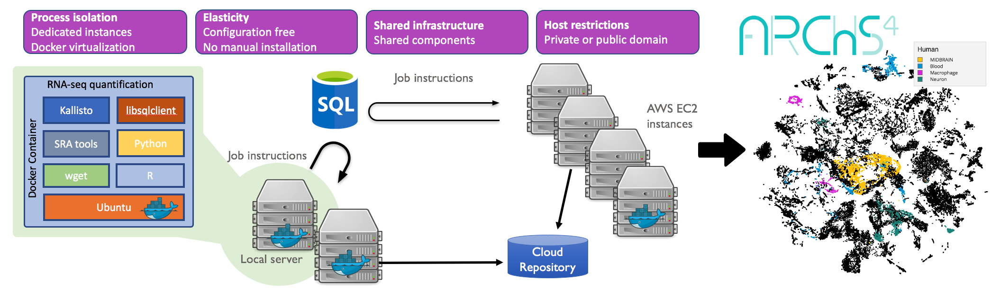

ARCHS4: Massive Mining of Publicly Available RNA-seq Data from Human and Mouse

ARCHS4 provides access to gene counts from HiSeq 2000, HiSeq 2500 and NextSeq 500 platforms for human and mouse experiments from GEO and SRA. The website enables downloading of the data in H5 format for programmatic access as well as a 3-dimensional view of the sample and gene spaces. Search features allow browsing of the data by meta data annotation, ability to submit your own up and down gene sets, and explore matching samples enriched for annotated gene sets. Selected sample sets can be downloaded into a tab separated text file through auto-generated R scripts for further analysis. Reads are aligned with Kallisto using a custom cloud computing platform. Human samples are aligned against the GRCh38 human reference genome, and mouse samples against the GRCm38 mouse reference genome.
Please acknowledge ARCHS4 in your publications by citing the following reference:
Lachmann A, Torre D, Keenan AB, Jagodnik KM, Lee HJ, Wang L, Silverstein MC, Ma’ayan A. Massive mining of publicly available RNA-seq data from human and mouse. Nature Communications 9. Article number: 1366 (2018), doi:10.1038/s41467-018-03751-6


If you have your own RNA-seq data in FASTQ format and would like to process it with the ARCHS4 pipeline you can use our new web service Elysium. Elysium is using the ARCHS4 pipeline to align FASTQ files. It generates ARCHS4 compatible gene expression profiles ready for downstream analyses.